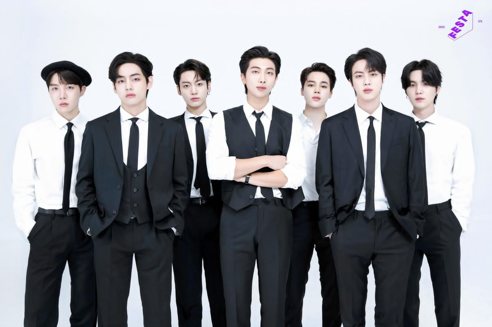

Nama : Rizka Magvira
NIM : 21104410089
Kelas : 3B
Jurusan : Teknik Informatika

BTS (Hangul: 방탄소년단; Hanja: Bangtan Sonyeondan) atau Bangtan Boys adalah grup vokal pria asal Korea Selatan. Grup ini beranggotakan tujuh orang, antara lain RM, J-Hope, Suga, Jin, V, Jungkook, dan Jimin, yang dikelola oleh Big Hit Music. Nama tersebut kemudian berakronim menjadi Beyond The Scene pada Juli 2017. Pada 12 Juni 2013, mereka membawakan lagu berjudul "No More Dream" dari album awal mereka "2 Cool 4 Skool" yang mendukung debut mereka pada 13 Juni 2013.
Meskipun berawal dari sebuah agensi kecil yang memulai debut pada bulan Juni tahun 2013 silam, BTS berhasil mencapai masa keemasan karir hingga diakui dunia. Sementara itu, BTS juga memiliki nama fandom yang disebut dengan ARMY. Bagi sebagian orang mungkin saja sudah tak asing lagi mendengar apa arti ARMY. arti ARMY yang menjadi fandom BTS ini adalah singkatan dari Adorable Representative M.C For Youth. Sehingga apa arti ARMY merupakan kepanjangan dari kalimat tersebut.
BTS menjadi selebritas yang paling banyak dicuitkan pada tahun 2017, menjadi yang "paling banyak disukai dan dicuit ulang lebih dari setengah milyar kali (502 juta)" di seluruh dunia. BTS diberi penghargaan sebagai Outstanding Achievement in Music di The Asian Awards. BTS juga menjadi grup Korea pertama yang menerima sebuah penghargaan di American Music Awards, memenangkan penghargaan sebagai Favorite Social Artist. Satu hal yang paling menarik dari MAMA 2022 adalah penghargaan MAMA Platinum yang diberikan langsung kepada BTS dan Jin BTS yang muncul sebagai ‘cameo’ saat acceptance speech MAMA Platinum.
MAMA Platinum diberikan pertama kali untuk BTS pada MAMA 2022 kali ini karena BTS merupakan boygrup pertama yang berhasil menyapu bersih semua kategori Daesang (penghargaan utama) selama empat tahun berturut-turut. MAMA Platinum merupakan kategori Daesang dari Daesang. Daesang merupakan penghargaan kehormatan tertinggi bagi artis-artis di industri musik dan merupakan penghargaan paling didambakan oleh seluruh artis. Daesang mennjukkan apakah upaya artis tersebut diakui atau tidak di tahun tersebut.
© Rizka Magvira | 21104410089 | Teknik Informatika-3B